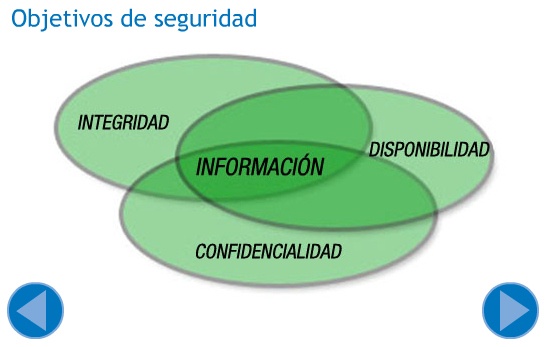

Material resumido por David Romero Santos
A lo largo de este epígrafe veremos a modo de introducción en qué consiste la seguridad informática. Comenzaremos reflexionando sobre el término de seguridad en su más amplio sentido. La RAE (acrónimo de Real Academia de la lengua Española) define seguro como:
“Libre y exento de todo peligro, daño o riesgo.”
Por tanto, si trasladamos el término al ámbito informático, nos podemos referir a seguridad informática como:
“Disciplina que se encarga de proveer a los sistemas informáticos de una serie de elementos (normas, métodos, procedimientos) para conseguir que estos sean más fiables.”
La seguridad absoluta es imposible, por eso hablaremos siempre de fiabilidad.
Si bien se podrían establecer multitud de clasificaciones dependiendo de una serie de criterios, a continuación vamos a realizar una clasificación de la seguridad atendiendo al momento en que se ponen en marcha dichas medidas de seguridad.
Teniendo esto en cuenta, distinguimos entre:
Seguridad activa: bajo esta clasificación agrupamos el conjunto de medidas que se toman para prevenir o minimizar los riesgos.
Ejemplos:
Seguridad pasiva: en este caso, las medidas se enfocan a minimizar los daños una vez ha ocurrido la catástrofe.
Ejemplos:
Como hemos dicho, la clasificación de la seguridad puede atender a diversos criterios. Vamos a ver otra clasificación, en este caso, dependiendo del tipo de recurso a proteger.
Seguridad física: entendemos seguridad física como el conjunto de medidas que se toman para proteger el hardware, las instalaciones y su acceso y demás elementos físicos del sistema. Un fallo común, es olvidarse de este tipo de seguridad centrándose únicamente en la seguridad lógica.
Ejemplos:
Seguridad lógica: complementa a la seguridad física y se encarga de proteger los elementos lógicos del sistema como son el software y la información mediante herramientas como antivirus, contraseñas, etc.
Ejemplos:
Para concretar un poco más en el objetivo que se persigue, vamos a definir una serie de características que debería cumplir un sistema seguro:
Confidencialidad: se trata de que sólo puedan acceder a los recursos de un sistema los agentes autorizados. Por ejemplo, si yo envío un mensaje una persona, solamente el destinatario debería tener acceso al mismo.
Integridad: los recursos del sistema sólo pueden ser modificados por los agentes autorizados. Garantiza que la información sea consistente. Por ejemplo, al hacer alguna transacción electrónica como pagar un artículo por Internet. Es muy importante que nadie pueda modificar los datos bancarios durante el tránsito.
Disponibilidad: para que exista disponibilidad los recursos del sistema tienen que estar a disposición de los agentes autorizados. Lo contrario sería una denegación de servicio. Para ilustrar este aspecto podemos pensar en cualquier empresa que preste algún servicio a través de Internet como, por ejemplo, una empresa de comercio electrónico. El hecho de que la aplicación de comercio electrónico no esté disponible, se traduce directamente en la desaparición del servicio y por tanto en pérdidas económicas, entre otros problemas.
No repudio: permite garantizar que los participantes en una transacción, no nieguen haber realizado una operación “en línea”. Por ejemplo, que una persona haga una compra y posteriormente se niegue a pagarla alegando que no fue él quien hizo la transacción.
En este epígrafe vamos a diferenciar entre estos términos y ver la relación que existe entre ellos.
Las vulnerabilidades y las amenazas son dos términos estrechamente relacionados. Si bien, una vulnerabilidad es la medida en que un elemento del sistema es susceptible de ser afectado por un atacante, una amenaza es cualquier circunstancia o evento que potencialmente puede causar un daño. Puede ser mediante la exposición, modificación o destrucción de información, o mediante la denegación de servicios críticos, aprovechándose de una vulnerabilidad.
Por otra parte, un ataque consiste en la materialización de una amenaza.
Existen varias razones por las que un programa puede presentar vulnerabilidades. Una mala instalación o configuración podría ser una de esas razones, pero lo más común son errores cometidos durante el desarrollo del programa. Se dejan puertas abiertas a la entrada de intrusos.
Un bug (en inglés significa error) o agujero de seguridad es un fallo existente en un programa fruto de un error durante la programación del mismo que da lugar a una vulnerabilidad. En muchos casos, se detecta un bug cuando el programa ya está en explotación. Entonces, los desarrolladores implementan pequeños programas que rectifican dicho error. Estos pequeños programas se conocen como parches.
Debido a que en numerosas ocasiones, las vulnerabilidades no son descubiertas a tiempo, existe lo que se conoce como ataques de día cero. Estos ataques son aquellos que se producen cuando los atacantes son conocedores de la vulnerabilidad antes que el propio fabricante y, por tanto, antes de que exista un parche para reparar la vulnerabilidad.
Si tenemos en cuenta el objetivo del ataque, podemos distinguir entre ataques activos y pasivos.
Ataque activo: Modifica o altera el flujo de datos.
Ataque pasivo: Su objetivo no es alterar la comunicación sino que simplemente escucha o monitoriza para obtener información a través del tráfico.
Teniendo en cuenta que esta unidad es una introducción a la seguridad para que te familiarices con los principales conceptos, no vamos a profundizar en lo que a medidas de seguridad se refiere, pero vamos a citar algunos consejos genéricos que será útil que conozcas. Algunas de estas técnicas o medidas son:
Al igual que ocurría en otros aspectos, los mecanismos de seguridad se podrían clasificar en base a diferentes criterios. En este caso haremos una clasificación atendiendo al momento en que se llevan a cabo.
Hasta ahora hemos visto el concepto de vulnerabilidad, de amenaza y de ataque. A continuación veremos lo que son los riesgos, los métodos y las herramientas que se utilizan para gestionarlos. Los objetivos de la gestión de riesgos son identificar, controlar y eliminar las fuentes de riesgo antes de que acaben materializándose en daños.
Entendemos el riesgo como la posibilidad de que una amenaza se materialice aprovechando una vulnerabilidad y viene dado por la siguiente ecuación:
Riesgo = Amenaza x Vulnerabilidad x Valor del bien
Analizando esta ecuación, vemos que el riesgo aumenta cuando aumentan tanto las amenazas como las vulnerabilidades como el valor de los bienes (o varios de ellos, lógicamente).
Por otra parte, definiremos el impacto como los daños o consecuencias que ocasiona la materialización de una amenaza. Los impactos se pueden clasificar en:
Llegados a este punto, te habrás preguntado como abordar la gestión de los riesgos en la empresa. El análisis de los riesgos es el primer paso en la gestión de riesgos. Debemos dar respuesta a preguntas como:
¿Qué elementos necesitan protección?
¿Cuáles son las vulnerabilidades de esos elementos?
¿Qué amenazas pueden aprovechar esas vulnerabilidades?
En definitiva, valorar la magnitud del riesgo.
Aunque se podrían establecer múltiples clasificaciones, en este caso vamos a dividir el desarrollo de dicho proceso en tres subprocesos:
MAGERIT es un instrumento para facilitar la implantación y aplicación del Esquema Nacional de Seguridad proporcionando los principios básicos y requisitos mínimos para la protección adecuada de la información.
Sus principales objetivos son:
Como puedes ver, el enfoque que tiene MAGERIT es el de evaluar los riesgos desde el punto de vista de un sistema de información, es decir, no es algo específico de sistemas informáticos.
Debes saber que, a la hora de gestionar la seguridad en una organización, se hace necesario reflejar de alguna manera todos los objetivos de seguridad. Entre otras cosas, para esto están las políticas de seguridad.
Teniendo esto en cuenta, una política de seguridad es el documento donde se van a plasmar todos los objetivos de la empresa en lo relacionado a seguridad de la información. Dicha política formará parte de la política general de la empresa.
Dicho de otro modo, mediante la política de seguridad, se define la manera de hacer un buen uso de los recursos hardware y software de la organización. Esto se logra:
Hasta ahora hemos visto la importancia de analizar los riesgos y de gestionarlos y documentarlos mediante una política de seguridad. Además, se deben aplicar una serie de técnicas y procedimientos de forma organizada para controlar el correcto funcionamiento de la organización. En otras palabras, se busca verificar que se cumplen los objetivos de la política de seguridad. Ésto, en términos generales, es lo que se conoce como auditoría.
El concepto de auditoría, inicialmente fue enfocado al terreno económico-financiero, pero hoy en día, este proceso se aplica en diversos ámbitos. En concreto y tomando como punto de partida la definición del párrafo anterior, la auditoría informática, consiste en una serie de procesos que se aplican para proteger los recursos de la empresa y asegurar un correcto funcionamiento.
Una auditoría puede llevarse a cabo por personal de la propia empresa o por personal ajeno a la misma, siendo esta opción la más aconsejable. La razón por la que es preferible que la auditoría se lleve a cabo por una persona o equipo ajeno a la empresa es de sentido común: si el encargado de los sistemas informáticos analiza los riesgos existentes con el fin de detectar deficiencias, es probable que su criterio no sea del todo objetivo. En algunos casos podría ser como “tirar piedras contra su propio tejado”.
Las etapas generales de una auditoría de podrían resumir a los siguientes puntos:
Muchos de estos procesos se pueden automatizar y, por ello, existen numerosos programas destinados a auditoría de seguridad.
A continuación vas a aprender en qué consiste un elemento fundamental en la gestión de riesgos: el plan de contingencias. Un plan de contingencias es un instrumento de gestión que consiste en una serie de medidas a llevar a cabo de forma complementaria al funcionamiento habitual de la empresa. Su objetivo es garantizar la continuidad del negocio de una organización en caso de se produzca un impacto.
Para ello, un plan de contingencias se desarrolla en tres subplanos independientes:
Es de suma importancia que el personal de la empresa conozca perfectamente el plan de contingencias para actuar en consecuencia. De lo contrario, perdería gran parte de su sentido.
Además de especificar medidas organizativas, también recoge información acerca de las responsabilidades del personal, los materiales empleados para llevar a cabo las medidas, etc.
En la constitución de 1978 ya se recoge el derecho a la protección de datos de carácter personal. En 1992 nace la LORTAD, primera Ley que regula de forma específica el tratamiento de los datos de carácter privado. Actualmente, la LORTAD, se encuentra derogada dando paso desde 1999 a la LOPD, (acrónimo de Ley Orgánica de Protección de Datos).
En los siguientes apartados veremos lo que es la LOPD y de qué manera afecta a una organización. Vas a comprobar, que dicha ley afecta principalmente a la manera en la que las empresas deben gestionar los datos de carácter personal de las personas.
Es importante conocer las directrices de esta ley, ya que, de incumplir algunos aspectos, una empresa podría enfrentarse a importantes sanciones.
A continuación, vamos a ver en qué ámbitos y situaciones es aplicable la LOPD. Por ejemplo, de cara la protección de datos de carácter personal, no es lo mismo un entorno empresarial que desarrolle una actividad económica, que un entorno doméstico.
La LOPD establece su ámbito de aplicación en el artículo 2, de forma que “la presente Ley Orgánica será de aplicación a los datos de carácter personal registrados en soporte físico, que los haga susceptibles de tratamiento, y a toda modalidad de uso posterior de estos datos por los sectores público y privado”
Teniendo esto en cuenta, es importante distinguir a qué se refiere la Ley con el concepto de fichero. Un error común es pensar en un fichero como una serie de datos almacenados con formato digital en algún soporte informático. El concepto de fichero al que se refiere la LOPD consiste en un conjunto de datos almacenados en cualquier soporte e independientemente de que estén automatizados o no (en este aspecto, supuso una novedad con respecto a la LORTAD).
Teniendo esto en cuenta, se regirá por esta legislación el tratamiento de datos efectuado en territorio español o en caso de no efectuarse en territorio español, cuando le sea de aplicación la legislación española.
Por el contrario, no será de aplicación a los datos almacenados en el ejercicio de actividades domésticas. Tampoco es aplicable a los ficheros sometidos a la normativa sobre protección de materias clasificadas (asuntos relativos a secretos oficiales). Así como, los establecidos para la investigación de asuntos relacionados con el terrorismo.
Te habrás preguntado qué entidad es la encargada de gestionar todo lo relacionado con la protección de datos. La AEPD (Agencia Española de Protección de Datos) es un ente de Derecho Público cuyo principal cometido es el de velar por el cumplimiento de la legislación en lo referente a protección de datos.
Las principales funciones de la AEPD, las vamos a clasificar, por un lado, en funciones relacionadas con los usuarios y usuarias, y por otro, en relación a las organizaciones que custodian los datos de carácter privado.
Funciones en el ámbito de los usuarios y usuarias (siempre atendiendo a lo referente a la protección de datos):
Funciones en el ámbito de las organizaciones que tratan los datos. Puedes considerar:
Otras funciones:
Con estas siglas ARCO nos referimos al conjunto de derechos ciudadanos en relación con los datos personales registrados en el Registro General de Protección de Datos.
Además de los derechos ARCO (acrónimo de Acceso, Rectificación, Cancelación y Oposición.), la AEPD establece una serie de derechos para los ciudadanos y ciudadanas como el derecho a no recibir publicidad no deseada, el derecho de exclusión de guías telefónicas, etc.
En el anterior apartado hemos hablado de algunos derechos de los ciudadanos y ciudadanas de cara al tratamiento de sus datos de carácter personal. A continuación, nos centraremos en las características de esos datos y los relacionaremos con una serie de medidas de seguridad a adoptar en función de su naturaleza. Es importante que te des cuenta, de que no es lo mismo almacenar datos como el nombre y los apellidos de una persona, que datos relativos a su religión, orientación sexual, etc. En consecuencia, las medidas a adoptar para mantener la privacidad de dichos datos, también serán diferentes.
Teniendo todo ello en cuenta, las medidas se clasifican en tres niveles en función del tipo de datos:
Básico
Tipo de datos:
Nombre y apellidos.
Números de teléfono.
Dirección postal y email.
Fecha y lugar de nacimiento.
Etc.
Medidas:
Documentación de seguridad donde se reflejen las funciones de cada usuario o usuaria del fichero.
Cambio de contraseñas cada año.
Mantener un registro de incidencias en relación al fichero.
Los datos desechados deberán ser borrados o destruidos.
Realización de copias de seguridad.
Medio
Tipo de datos:
Relativos a infracciones administrativas o penales.
Aquellos que permitan evaluar la personalidad o comportamiento de una persona.
Aquellos de los que sean responsables:
Administraciones tributarias.
Entidades financieras.
Entidades gestoras y la Seguridad Social.
Etc.
Medidas:
Medidas de nivel básico y además:
Auditoría al menos una vez cada dos años.
Establecer mecanismos de control de acceso a los datos.
Alto
Tipo de datos:
Relativos a ideología, afiliación sindical, religión, creencias, origen racial, salud o vida sexual.
Los que contengan o se refieran a datos recabados para fines policiales sin consentimiento de las personas afectadas.
Aquellos que contengan datos derivados de actos de violencia de género.
Medidas:
Medidas de nivel medio (y por tanto básico) y además:
Cifrado de los datos.
Copias de seguridad almacenadas en un lugar diferente al de los datos.
Mantener un registro de los accesos a los datos.
Es importante que sepas que cuando una organización incumple lo establecido por la Ley, puede ser sancionada con importantes sumas de dinero. La cuantía de las sanciones que impone la LOPD depende de varios parámetros como:
Estableciendo una clasificación en cuanto a la gravedad de las infracciones y redondeando las cifras, tendríamos:
Leves
Infracción:
No solicitar la inscripción del fichero en la Agencia Española de Protección de Datos.
Recogida de datos personales sin informar previamente de sus derechos a los afectados y afectadas.
No atender a las solicitudes de rectificación o cancelación de los datos.
No proporcionar la información de solicite la AGPD.
Cuantía sanción:
De 600€ a 60.000€.
Graves
Infracción:
No inscribir los ficheros en la AGPD.
Utilizar los ficheros con distinta finalidad al objeto legítimo de la empresa.
No permitir los derechos de acceso u oposición de los ficheros.
Mantener datos inexactos o no efectuar las modificaciones solicitadas.
No seguir los principios y garantías de la LOPD.
Recogida y tratamiento de datos sin el consentimiento del afectado o afectada.
No remitir a la AGPD las notificaciones previstas en la LOPD.
Mantener los ficheros sin las debidas condiciones de seguridad.
Vulnerar el deber de secreto para datos de nivel medio.
Cuantía sanción:
De 60.000€ a 300.000€.
Muy graves
Infracción:
Recogida de datos de manera engañosa o fraudulenta.
Recabar datos especialmente protegidos sin la autorización del afectado o afectada.
Desatender u obstaculizar de forma sistemática el ejercicio de los derechos de cancelación o rectificación.
Vulnerar el secreto sobre datos especialmente protegidos.
La comunicación o cesión de datos en los casos que no esté permitida.
No cesar en el uso ilegítimo a petición de la AGPD.
No atender de forma sistemática los requerimientos de la AGPD.
La transferencia de datos de carácter personal con destino a países que no apliquen medidas de protección equiparables o sin autorización.
Cuantía sanción:
De 300.000€ a 600.000€.
Una vez vista la LOPD, seguimos con la Ley de Servicios de la sociedad de la información, de aquí en adelante LSSI. La referencia normativa la encontramos en la Ley 34/2002 del 11 de Julio.
Como veremos a continuación, esta Ley se aplica al comercio electrónico y a aquellos servicios de Internet siempre que representen una actividad económica para el prestador o prestadora del servicio.
Hoy en día, cada vez son más las empresas que constituyen una actividad económica a través de Internet, ya sea directa o indirectamente. Con esto, nos referimos tanto a empresas de comercio electrónico, como empresas que realizan publicidad por vía electrónica o empresas intermediarias como proveedores de Internet o empresas de alojamiento. Estas empresas deberán conocer las obligaciones que establece la LSSI, pero además, los usuarios y usuarias, también están incluidos en el caso de que tengan una página con publicidad por la que perciban ingresos o simplemente, para conocer sus derechos como usuarios y usuarias en Internet.
Para analizar esta Ley, comenzaremos respondiendo a la pregunta ¿a quién es aplicable? La LSSI se centra en Internet y las nuevas tecnologías y es aplicable a los prestadores o suministradores de Servicios de la Sociedad de la Información, siempre que representen una actividad económica para el prestador o prestadora.
Además, el prestador o prestadora de servicios debe estar establecido en España o dicho de otro modo, su domicilio fiscal debe estar en territorio español siendo este su lugar principal de gestión de operaciones. Para aquellos no establecidos es España existen algunas excepciones, como por ejemplo, aquel que preste servicios ofrecidos a través de un establecimiento permanente en España. ¿Conoces algún caso?
Sin perjuicio de la legislación específica al respecto, la LSSI también es aplicable a los servicios de juegos de azar y apuestas.
Entonces, ¿a quién no es aplicable? Pues no será de aplicación a aquellos servicios que no constituyan una actividad económica. Tampoco a servicios prestados por notarios o notarias y registradores o registradoras, abogados o abogadas y procuradores o procuradoras, en el ejercicio de sus funciones de representación y defensa en juicio, a quienes se le aplicará normativa específica.
Te habrás preguntado las obligaciones que tiene una empresa de cara al cumplimiento de la LSSI. Dependiendo del tipo de actividad que desempeñe la empresa, la LSSI especifica una serie de obligaciones que debe cumplir. Para especificar estas obligaciones dividiremos las empresas en tres grupos:
Las empresas dedicadas al comercio electrónico, deben mostrar en su página Web una serie de datos que informen al usuario o usuaria, como por ejemplo:
En el caso de empresas que hacen publicidad a través de Internet:
Para empresas intermediarias de los servicios de Internet (estas son las empresas que ofrecen alojamiento de datos, los buscadores y los proveedores de Internet):
Imágenes, música, vídeo, contenidos…en la red existe un amplio abanico de recursos y obras de todo tipo y no todas tienen los mismos permisos para su uso y difusión.
Hace algunos años, la posibilidad de hacer una copia ilegal se reducía prácticamente a copiar obras musicales o cinematográficas sobre cintas magnéticas. Hoy en día, con la globalización de Internet y el uso generalizado de los ordenadores, la existencia de todo tipo de obras digitalizadas y colgadas en la red, es algo de lo más común.
A lo largo de este epígrafe veremos las directrices de la Ley de Propiedad Intelectual (de aquí en adelante LPI) y algunos tipos de licencias que se pueden asociar a las obras.
En este apartado conocerás las directrices de la Ley de Propiedad Intelectual. Muy pocas veces nos vemos afectados por esta ley pero quizás, tú seas un pequeño creador o creadora.
Según el Ministerio de Cultura:
La propiedad intelectual es el conjunto de derechos que corresponden a los autores y a otros titulares (artistas, productores, organismos de radiodifusión…) respecto de las obras y prestaciones fruto de su creación
El Real Decreto Legislativo 1/1996, de 12 de abril, aprueba el texto refundido de la Ley de Propiedad Intelectual.
La nombrada Ley, protege todo tipo de creaciones originales de cualquier tipo y expresadas en cualquier medio, lo que abarca desde un libro, a una coreografía. Por otra parte, se excluyen las ideas, conceptos matemáticos o métodos de operación, pero no la expresión de los mismos.
Existen dos tipos de derechos sobre una obra, los derechos de autor (persona que crea la obra) y los derechos conocidos como afines, pertenecientes a productores y productoras, ejecutantes no autores de la obra, etc.
Hay quien piensa que la propiedad intelectual de una obra nace en el momento de su inclusión en el Registro de Propiedad Intelectual o que el autor o autora de la obra debe estar inscrito en alguna sociedad privada de gestión, como por ejemplo, la SGAE (acrónimo de Sociedad General de Autores y Editores), pero ninguna de estas cosas son necesarias ya que la propiedad intelectual de una obra, comienza en el momento en que se crea dicha obra sin necesidad de llevar a cabo ningún trámite especial.
Posiblemente sabrás que, cuando se crea una obra, (ya sea literaria, pictórica, fotográfica, etc.) existen varias formas para proteger de forma legal el uso que se hace de dichos contenidos. Una de ellas, es el Copyright, que en España, constituye un derecho automático, aunque cada país tiene una legislación copyright aplicable con diferentes matices.
¿Has reconocido con facilidad este símbolo?
La manera de incluir el Copyright, aunque puramente indicativa, se formaliza de la siguiente manera:
Símbolo Copyright © + año de publicación + nombre del autor (o de la sociedad que ha depositado el copyright).
Ejemplo: © 2011 Ministerio de Educación.
Cuando un contenido incluye Copyright ya sabes que significa que tiene los derechos reservados y, por tanto, existen una serie de restricciones sobre el uso de dichos contenidos. Como por ejemplo, la utilización o la publicación parcial o total con fines comerciales.
Como hemos dicho, el Copyright constituye un derecho automático por si mismo, pero existen instrumentos que sirven de ayuda a la hora de ejercer este derecho, como son los depósitos de Copyright. Un depósito de Copyright, te permite demostrar que realmente eres el autor o autora. También te permite probar en qué fecha la obra ha sido creada. Sin este instrumento no siempre es una tarea trivial.
Como contrapunto al Copyright, surge lo que se conoce como Copyleft. Cuando una obra tiene una licencia Copyleft implica que dicha obra o contenido, tendrá permisos de copia, modificación y redistribución, y además impone la misma licencia a las copias y a las obras derivadas.
¿Con cual de los dos identificaría al software libre?
n el anterior apartado hemos visto las licencias Copyright. Llegados a este punto, puede que te preguntes ¿Pero las posibilidades se reducen a un Copyright o Copyleft? ¿No hay término medio?
Pues bien, como alternativa más flexible al Copyright, nacen las licencias Creative Commons que permiten reservar solamente determinados derechos de una forma muy sencilla.
Creative Commons es una corporación americana sin ánimo de lucro. En el 2004, en España se adaptan las licencias a la legislación sobre propiedad intelectual, siendo la institución afiliada a CC la Universidad de Barcelona.
Este tipo de licencias cada vez son más utilizadas y de hecho España, encabeza el ranking (en inglés, tabla de clasificación) mundial de países en su utilización.
Las licencias Creative Commons ofrecen una serie de derechos a terceras personas bajo unas condiciones concretas. A continuación vamos a ver, según Creative Commons España, las condiciones a partir de las cuales se forman las licencias existentes:
Con estas cuatro condiciones combinadas podrías generar las seis licencias que se pueden escoger:

Material resumido por David Romero Santos

Materiales actualizados por el profesorado de la Junta de Andalucía

Materiales desarrollados inicialmente por el Ministerio de Educación, Cultura y Deporte
Autoría: César Poyatos
Licencia: cc by-nc-sa
Procedencia: Montaje sobre http://www.flickr.com/photos/cpoyatos/4694049208